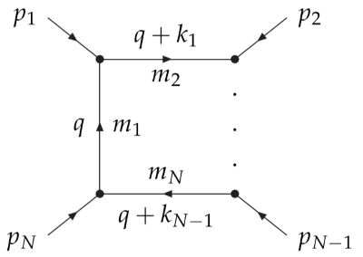

Definitions
Copied from the LoopTools manual.
General one-loop integral
Consider a general one-loop integral shown as follows:

The tensor loop integral is defined as
with $r_\Gamma = \frac{\Gamma^2(1-\varepsilon) \Gamma(1+\varepsilon)}{\GammaΓ(1-2\varepsilon)}$, $D=4-2\varepsilon$.
The momentum flow is shown in the figure. We have
Tensor coefficients
The 1-point, 2-point, 3-point, 4-point and 5-point scalar loop integrals are denoted by A0, B0, C0, D0 and E0, respectively.
The 1-loop tensor integral can be decomposed as
Conventions for the momenta
Consider the triangle diagram:

The 3-point loop function can be written either in terms of the external momenta as
or in terms of the momenta $k_i$ as
The coefficients computed are the coefficients of the momenta $k_i$, e.g., $C_1$ and $C_{112}$ are the coefficients of $k_{1\mu}$ and $k_{1\mu}k_{1\nu}k_{2\rho}$, respectively. The advantage of this basis is that the tensor-coefficient functions are totally symmetric in the indices.
UV, IR and collinear divergences
UV divergence
Using dimensional regularization, the UV divergence has the form $1/\varepsilon -\gamma_E+\log(4\pi)$. In LoopTools, the UV divergence is kept as the $1/\varepsilon$ part, and the finite part of this combination is set as $\Delta$, which is $0$ (default value in LoopTools) in the $\overline{\rm MS}$ scheme. Setting $\Delta=-2$ reproduces the one-loop functions of constrained differential renormalization in Nucl.Phys.B 537 (1999) 561. A change of $\Delta$ can be obsorbed by a change of the dim. reg. scale $\mu$: $\mu_{\rm new}^2 = e^\Delta\mu_{\rm old}^2$.
Relevant functions: getdelta/setdelta.
IR divergence
The treatment of the IR divergence is controlled by the parameter $\lambda^2$.
- $\lambda^2>0$: photon-mass regularization.
- In dim. reg., $\lambda^2=0$ gives the finite piece of the result, and $\lambda^2=-1$ and $\lambda^2=-2$ return the coefficients of $1/\varepsilon$ and $1/\varepsilon^2$, respectively.
Relevant functions: getlambda/setlambda.
For $\lambda^2\leq0$, the $\varepsilon^{-1}$ component contains both the UV and IR divergences. The UV part can be switched off and on by setuvdiv(1) and setuvdiv(0), respectively.
Relevant functions: getuvdiv/setuvdiv.
Collinear divergence
For the collinear divergence, there is a parameter $m_{\rm min}^2$; all arguments smaller than that are set to 0 to detect the existence of collinear divergence. If there is a IR divergence, then $m_{\rm min}^2$ is substituted back to $p_i^2$.
Relevant functions: getminmass/setminmass.